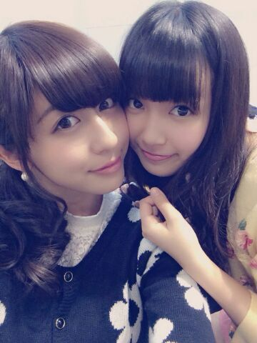

| 2014/01 09 Thu | ひめたん(*>ω<*)そ の393 |

るんるん らぶ！
ねねころー！
ねねころ日記みたよー
こちらこそいつも読んでるよーう
ルッピーちゃんめっちゃかわいいよー
ねねころー(〃ω〃)
受験生さん、
いよいよセンター本番ですね！
受験勉強 本当にお疲れ様でしたっ
今までの自分の努力を信じて
やったってください(｀・ω・´)/
ステキな春が訪れることを祈ってます＊＊
うおー眩しい

日光にあたりに行ってる感じが素人丸出し。
逆光って、こーゆーこと？
この日撮ったものが
みなさんに見てもらえるには
ちょっと時間がかかるかもしれないーです
いつもコメントありがとうございます
そう！そうみなさん
ちょっと前にamebaブログで
わんちゃんのクイズ出したじゃーん？
それでね、コメント読んでるとね
ほんとにたくさんの方が考えてくれて
とっても嬉しいんですよ( ^ω^ )んですけども
正解がまだひとりも出てないのよ！！！
そうそれでね、ひめたんも鬼ではないのでね
３択にします！
当ててね( ^ω^ )威圧
1.ルッピー
2.クッキー
3.なっしー

 ひめたんは、仲良しのひなちまと２人で
ひめたんは、仲良しのひなちまと２人で
ランチとかショッピングには、
行ったことがありますか？
２人はないかなあー
お互いに学校とかあって忙しい人なので
なかなか都合が合わないのです
でも帰り道がちょっと一緒だからよく話すかなー
ちまとは同じ学生組なので
宿題やんなきゃーとか、眠いーとか
もうすぐテストだーとかよく言い合います( ^ω^ )
ひめたんはさ、爪切るとき深爪並みに切る人？
それとも割りと残す人？
深爪派。
たまに短く切りすぎて
２・３日痛い思いをすることもあるけど
それでも負けずに深爪派
ひめたんビームを出すためには特に
何を食べればいいですか！？
企業秘密です。
クリスマスケーキといえば、
イチゴのショートケーキ派ですか
それともチョコレートケーキ派ですか？
去年のクリスマスはジェラートでした(笑)
寒い時こそのってやつね！
どっちもすきだけどチョコレートケーキのほうが
ちょっとすきかな(＊^ω^＊)
クリボッチについてコメントしてください
泣かないで！
ほら、来年は、あっいや今年は
今年こそはがんばりましょ？
乃木ちゃんのイベントがあったら
参加するのも勝ちだと思うよーう＊
僕のシャンプーはイチゴの匂いがするのですが、
髪の毛からイチゴの匂いがする男子って
どう思いますか？やっぱり変ですかねぇ？
変じゃないと思うよーっ
メルヘン( =^ω^= )いちごいちご
宿題を有意義に進めるにはどうすればいいかな？
音楽を音量小さめで流してやると
ひめたんは課題やる時間が楽しくなります♪
一時期は大音量で周りの音を完全に
シャットアウトするのがブームだったんだけど
何より課題に集中できないからね(´・ω・｀)
疲れたなーって思ったら
スープとか飲みながらまったりやったらいかが？
ひめたんの好きなお寿司は何？
ひめたんはお寿司に何を付けて食べる？
今はサーモンとか、玉子とかもすきよ
シンプルにお醤油派です☆
大晦日は年越しそば派 うどん派？
おそば派！
そもそも おそばとおうどんなら
おそば派なのです
ひめたんはぬいぐるみでひとり遊びできた子？
それともお外でみんなと遊ぶ寂しがりやさん？
みんなとぬいぐるみで遊ぶ寂しがり屋さん、かな
中元家は三姉妹だったので
小さなおにゃーのこが持ってそうなおもちゃは
だいたい持ってましたよー
シルバニア、リカちゃん、ピコとかね＊＊
ひめたんのブログの
コメント欄下２ケタに46を踏んだ方へ
手書きでコメ返するコーナー
＼ ひめたん46 ／

なんか最近 質問がやたらおもしろいんですが
みなさーんいいことでもあったのー？
もちろんおもしろい質問も
おもしろいから答えるけども
真面目なことも聞いていーんだからね(＊^^＊)？笑
なんでも気軽に書いてってくださーいなっ
1/10 NOGIBINGO2
いよいよはじまります！
みなさん ぜひみてね ー♪
(＊´・ω・＊)
コメント(428)
2014/01/09 23:18